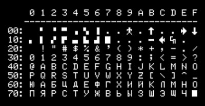
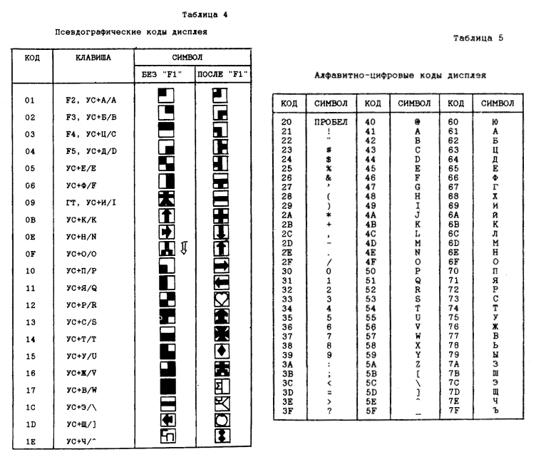
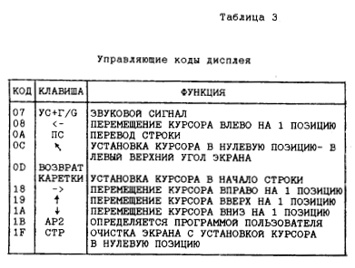

В базовом радиолюбительском компьютере Радио-86РК набор первых 128 символов выглядел так:

Микросхема видеоадаптера К580ВГ57 может выводить только 128 символов, поэтому и стандартный набор символов был именно такого размера.
В производственном клоне, выпускающемся на заводе КБ "Лианозово", набор символов немного отличался. Вот выдержка из официальной документации Микроши:


Отличие состоит в том, что в Радио-86РК небыло предусмотрено символа твердого знака. А в Микроше твердый знак был, и за ним был закреплен код 7FH. Если же посмотреть на тот же код у Радио-86РК, то можно увидеть символ "квадрат". Этот квадрат очень похож на символ полностью залитого знакоместа 17H. Знакоместо в Радио-86РК и в его клонах состояло из матрицы 6x7 точек. Так вот, в символе 17H заняты все точки 6x7, а в символе квадрата 7FH заняты точки 6x6.
Этот символ квадрата часто использовался в играх, созданных для Радио-86РК. Например, чтобы отобразить толстую линию или какое-то подобие стены. При портировании игр на Микрошу, об этом забывали или не заморачивались. И поэтому пользователи Микроши часто видели странные уродливые игры, в которых вместо ровной линии
█████████████████████████
было нарисовано вот это:
ЪЪЪЪЪЪЪЪЪЪЪЪЪЪЪЪЪЪЪЪЪЪЪЪЪ
Еще веселее дело обстояло, если символ квадрата использовался в какой-нибудь гра